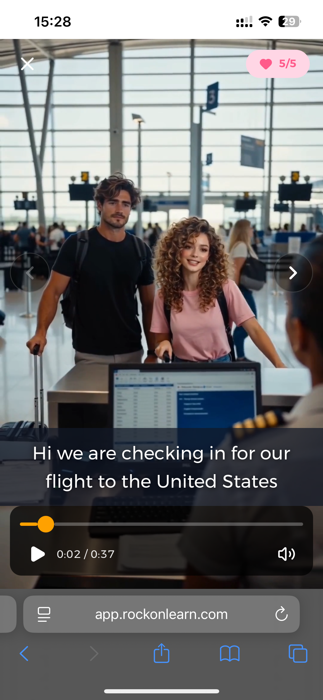
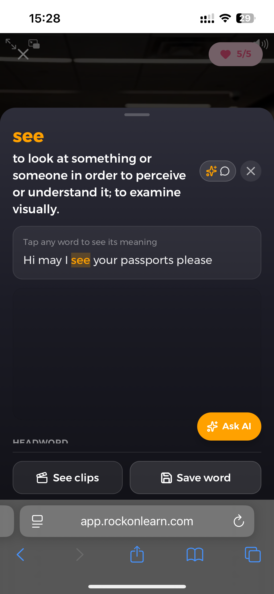
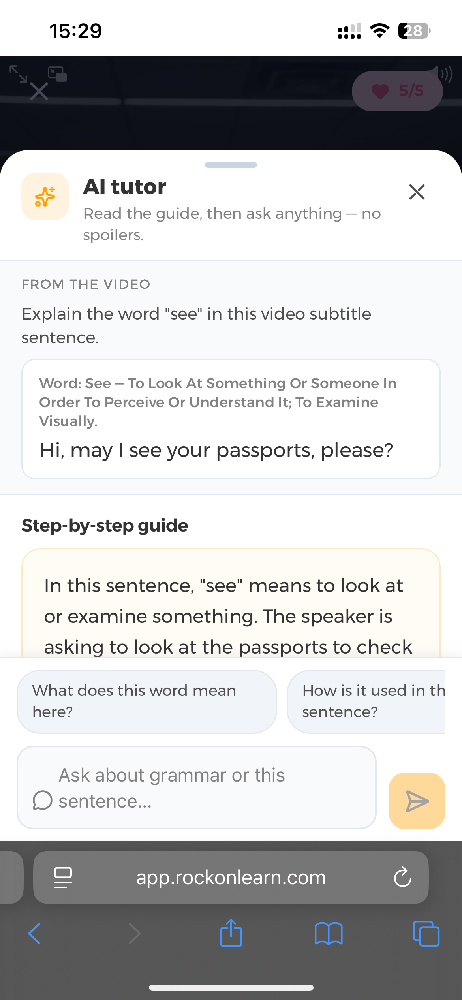
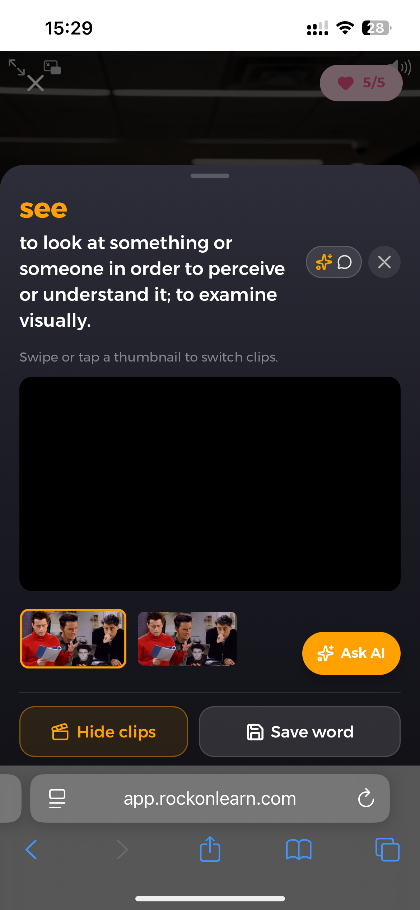
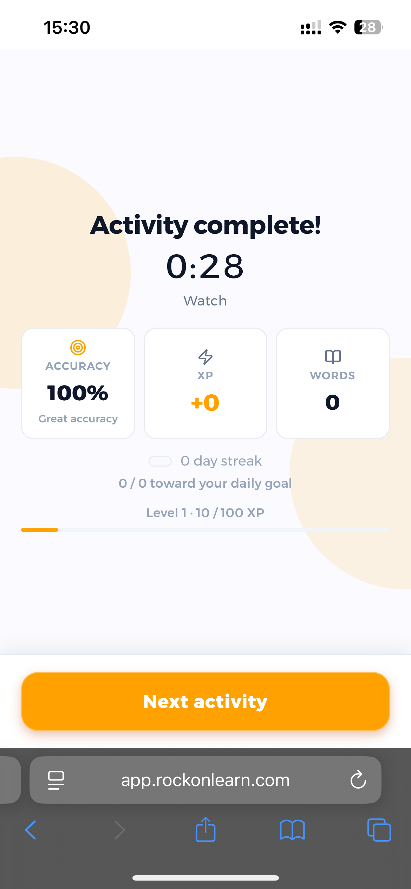
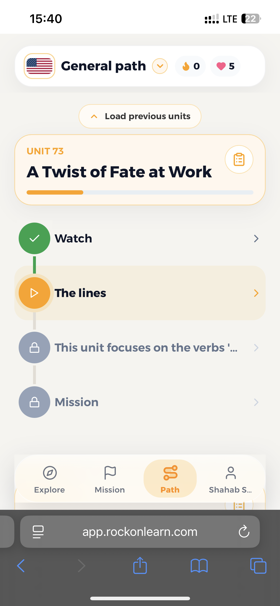
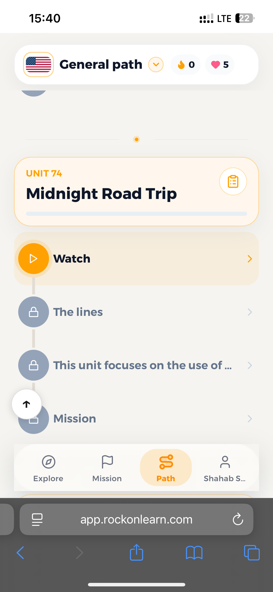
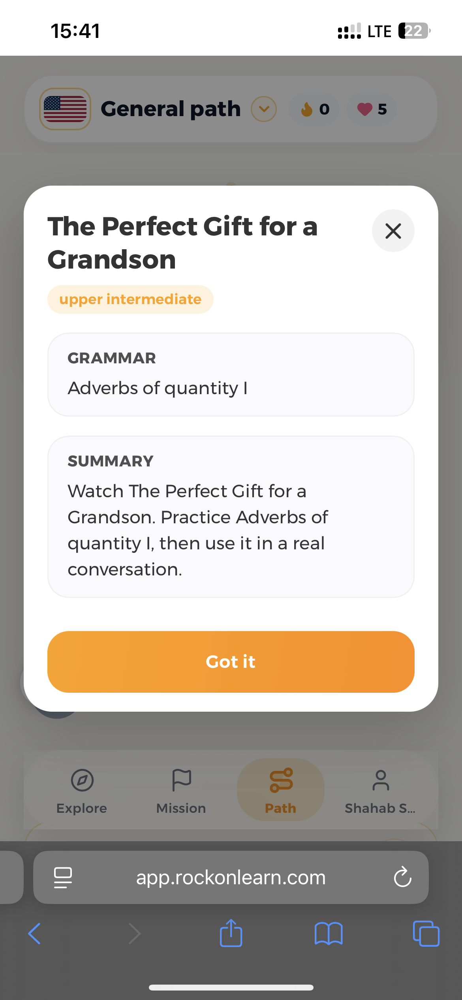

1

Video lesson clip plays with subtitles ("Hi we are checking in for our flight"); a hearts/lives counter is shown.
→
2

User taps a word ("see") in the subtitle to reveal its definition and example sentence.
→
3

AI tutor panel explains the tapped word "see" in context, with suggested follow-up questions.
→
4

Word detail sheet with "See clips" toggled on, showing short video clips that use the word.
→
5

"Activity complete!" results: time, 100% accuracy, XP earned, words learned, and a Next activity button.
→
6

Curriculum screen: Unit 73 "A Twist of Fate at Work" with Watch, The lines, and locked Mission steps.
→
7

Scrolled to Unit 74 "Midnight Road Trip," Watch step unlocked, later steps still locked.
→
8

Popup preview of an upcoming unit, "The Perfect Gift for a Grandson," with its grammar focus and summary.